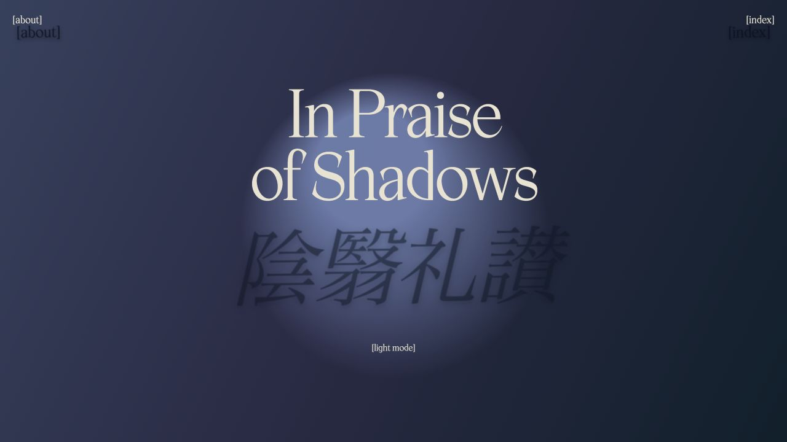
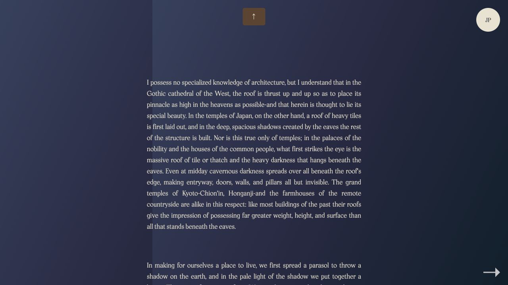

In Praise of Shadows
About In Praise of Shadows
A website adaptation of Jun’ichirō Tanizaki’s In Praise of Shadows. The essay describes the beauty of dim interiors, from the deep eaves of a Japanese house to the way lacquerware and gold look in low light.
Description
The homepage has light and shadow versions, with overlapping English and Japanese titles. Inside, panels open like doors to reveal the writing. The reading pages use warm gradients, pale text, and slow fades. Readers can move between chapters and switch between English and Japanese.

